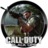

 Call of Duty: Black Ops
Detalles
 |
|
| Tiempo de juego | No Jugado |
| Última actividad | Nunca |
| Añadido | 11/6/2024 14:41:31 |
| Modificado | 11/8/2024 17:35:21 |
| Estado de finalización | No Jugado |
| Librería | Playnite |
| Fuente | 6TB STORE |
| Plataforma | Macintosh Microsoft Xbox 360 Nintendo DS Nintendo Wii PC (Windows) Sony PlayStation 3 |
| Fecha de lanzamiento | 11/9/2010 |
| Puntuación de la Comunidad | |
| Puntuación de la Crítica | 82 |
| Puntuación de usuario | |
| Género | First-person shooter |
| Desarrollador | Treyarch |
| Editor | Activision |
| Característica | Multiplayer Single-player |
| Enlaces | Wikipedia Official website IMDb |
| Tag | [Game Engine] IW 3.0 (modified) [People] artist: Colin Whitney [People] artist: James H. Dargie [People] composer: Sean Murray [People] designer: Joe Chiang [People] director: Corky Lehmkuhl [People] director: Dave Anthony [People] producer: Pat Dwyer [People] programmer: David King [People] writer: Corky Lehmkuhl [People] writer: Craig Houston [People] writer: Dave Anthony |
Descripción
Call of Duty: Black Ops is a 2010 first-person shooter game developed by Treyarch and published by Activision. It was released worldwide in November 2010 for Microsoft Windows, the PlayStation 3, Wii, and Xbox 360, with a separate version for Nintendo DS developed by n-Space. Aspyr later ported the game to OS X in September 2012. It is the seventh title in the Call of Duty series and a sequel to Call of Duty: World at War.
Set in the 1960s during the Cold War, the game's single-player campaign follows CIA operative Alex Mason as he attempts to recall specific memories to locate a numbers station set to instruct Soviet sleeper agents to deploy chemical weapons across the United States. Locations featured in the game include Cuba, the Soviet Union, the United States, South Vietnam, China, Canada, and Laos. The multiplayer component of Black Ops features multiple objective-based game modes that are playable on 14 different maps included with the game. Improvements to loadout options and killstreak rewards are made. A form of virtual currency, COD Points, allows players to purchase weapons and customization options for their in-game character, as well as attachments and customization options for their weapon.
Development for the game began in 2009. Whereas Treyarch worked on both World at War and the tie-in video game for the James Bond film Quantum of Solace simultaneously, they focused specifically on Black Ops during this development cycle. Different teams within Treyarch focused on a certain game mode. Black Ops runs an enhanced version of the IW 3.0 engine used in World at War. The improvements made allowed for bigger campaign levels to be made as well as enhanced lighting. Music was composed by Sean Murray, with licensed music by the Rolling Stones, Creedence Clearwater Revival, and Eminem appearing in the game. Avenged Sevenfold also recorded an original song for the game as well. The marketing of the game began in April 2010.
The game received positive reviews from critics with praise for its story, voice-acting, darker tone and multiplayer modes, although some criticized it for its linear gameplay and technical issues. Among other awards and nominations, Call of Duty: Black Ops was nominated Game of the Year by numerous media outlets and award shows, including the Interactive Achievement Awards, British Academy Games Awards, and Spike Video Game Awards. Within 24 hours of going on sale, the game had sold more than 5.6 million copies, breaking the record set by its predecessor Modern Warfare 2 by some 2.3 million copies. The game had sold over 25 million copies worldwide, making it, at the time, the best selling game of all time in the United States, and it remains one of the best-selling games of all time. A sequel, Call of Duty: Black Ops II, was released in 2012. Call of Duty: Black Ops Cold War, set between Black Ops and Black Ops II, was released in 2020.
Gameplay
Black Ops is a first-person shooter, retaining the same gameplay mechanics as previous Call of Duty titles. The player assumes the role of a foot soldier who can wield various firearms (only two of which can be carried at once), throw grenades and other explosives, and use other equipment as weapons. A player close enough to an enemy can kill with one knife blow. A character can take three stances: standing, crouching, or prone. Each affects the rate of movement, accuracy, and stealth. The player can drop to the prone stance from the standing stance while running (colloquially known as "dolphin diving"), and can momentarily sprint before stopping.
The screen glows red to indicate damage to a player's health, which regenerates over time. When the character is within the blast radius of a live grenade, an on-screen marker indicates where it is in relation to the player, helping the player to move away or to throw it back. Among the weapons new to the series in Black Ops are crossbows with bolts and explosive ammunition, Dragon's Breath rounds and ballistic knives.
The player assumes the role of various characters during the single-player campaign, changing perspectives throughout the story. The playable characters are covert operatives conducting black operations behind enemy lines. Each mission features a series of objectives that are displayed on the heads-up display, which marks the direction and distance towards and from such objectives as it has been in the earlier versions. The player is accompanied by friendly troops throughout the game. Although primarily a first-person shooter, certain levels feature sequences where the player pilots a Hind helicopter and guides friendly troops from a SR-71 Blackbird reconnaissance aircraft. In addition, the campaign features several scripted cinematic moments.
Multiplayer
The online multiplayer mode of Black Ops usually revolves around two teams on a specific mission. For example, in Team Deathmatch the team with the most kills wins, while in Capture the Flag, players take the other team's flags and return it to their base. Additionally, there is Free For All in which players are not separated into teams. Not including Downloadable maps, there are 14 different maps.
Black Ops retains the experience points and unlockable reward system that has been kept since Call of Duty 4. The multiplayer focuses on socialization and customization. "Create-a-Class 2.0" allows enhanced personalization with appearance items as well as upgradable perks; weapons are extensively customizable with writing, emblems, attachments, and camouflage painting. Even reticles can be modified.
There is more than one style for an attachment, which allows for a lot more personalized weaponry; for example, the player can choose between a red dot sight or a reflex sight, both of which share many of the same traits, although the red dot fills up less of the screen (something desired by many players). Character models depend on the first tier perk instead of the weapon's type. Furthermore, face paints can be unlocked. New custom killstreak rewards include explosive R/C cars, guided missiles, and controllable attack helicopters.
A currency system has been implemented allowing players to buy weapons, accessories, and clothes. Players can gamble with their "COD Points" in a free-for-all based playlist called "Wager Match", which is composed of four game modes. Time-limited objectives known as "Contracts" can be purchased to gain more currency and experience points. The progression system is not featured in the local split-screen multiplayer. In the local split-screen play, all character customization options are already unlocked. Players can no longer define game rules such as win conditions.
Players can play alone or with friends against AI opponents in "Combat Training" with a separate progression system. Online split-screen is re-introduced on Xbox 360 and PS3. The guest account can rank up but is reset after each sign out. Only on Xbox 360, a second Gold Xbox Live account can be used to keep the second player's progression. Aside from the Combat Training mode, Xbox users can also have up to four players in split-screen mode play against AI opponents even without having an Xbox Live account. This is done by configuring the Local Split Screen settings and setting the number of enemies to a value greater than zero.
For the first time in the series, clips from online gameplay can be recorded. Some specific features that have been removed from the PC version of Infinity Ward's Modern Warfare 2 return, such as lean, mod tools, the developer console, and dedicated servers. Dedicated servers are exclusively provided by Game Servers. Steam is the exclusive platform for Black Ops on PC, and the game is protected by Valve Anti-Cheat.
The Wii version of the game includes in-game voice chat. This is the first Call of Duty title to include the voice chat feature for the Wii. Nintendo and PDP have partnered to release the first headset to be used with the Wii known as PDP's Headbanger Headset.
A zombie co-op mode, titled "Zombies", can be played with four players online or as a two-player split screen co-op mode. Originally featured in World at War, it was revamped to be included in Black Ops and future titles.
In this mode, one to four players fight an unlimited number of waves of zombies, beginning with an M1911 pistol. Players earn points for killing zombies or repairing boarded-up windows, which are used to expand areas of the map, access stronger weapons, or upgrade existing weapons. Zombies routinely break the windows to enter and attack the players; if a player is attacked enough times, they fall and will need to be "revived" by another player in a certain time, or will respawn in the next round with their weapon progress reverted if they are not revived. The game ends when all players are damaged enough to fall. The base game features three maps, "Five", "Kino Der Toten", and the unlockable "Dead Ops Arcade".
Dead Ops Arcade is an unlockable game mode that the player can unlock by typing "DOA" within the data terminal of the main menu. Once unlocked, the player is transferred to play a retro arcade version of the main zombie's game mode. New elements like extra lives, unique mini maps, and zombie bosses are present within the game mode. Dead Ops Arcade includes co-op playthrough through either Xbox Live or split screen of up to 4 players.
Plot
Characters and setting
Black Ops's single-player campaign takes place between 1961 and 1968 during both the Cold War and the Vietnam War, 16 years to 23 years after the events of World at War. It portrays a secret history of black operations carried out behind enemy lines by the CIA. Missions take place in various countries around the globe, including Cuba, the Soviet Union, the United States, South Vietnam, Hong Kong, Canada, and Laos. The single-player campaign revolves around the CIA's attempts to stop Soviet sleeper agents embedded in the US, to be activated via broadcasts from a numbers station, from deploying an experimental nerve agent and chemical weapon known as "Nova 6".
The player controls the protagonist, CIA SAD/SOG operative and former Marine Force Recon Captain Alex Mason (Sam Worthington). Other characters are occasionally playable, such as CIA paramilitary operations officer Jason Hudson (Ed Harris). Mason is often joined by fellow operatives Force Recon Master Sergeant Frank Woods (James C. Burns) and Navy UDT Chief Joseph Bowman (Ice Cube), while Hudson works with Grigori Weaver (Gene Farber), a Russian-American field operative. Viktor Reznov (Gary Oldman), a character of the Soviet campaign in World at War, returns along with protagonist Dimitri Petrenko (Boris Kievsky). Oldman also voices Daniel Clarke, an English scientist assisting in the development of Project Nova. Opposing the CIA are the leaders of Project Nova: Soviet Army Major General Nikita Dragovich (Eamon Hunt), Colonel Lev Kravchenko (Andrew Divoff), and ex-Nazi scientist Friedrich Steiner (Mark Bramhall). Black Ops also features the appearance of several historical figures; Fidel Castro (Gustavo Rex), Robert McNamara (Robert Picardo), and John F. Kennedy (Chriss Anglin).
The Zombies mode takes place over various eras of time, mostly during the final year of World War II and the 1960s. The story mainly follows a crew of four soldiers: "Tank" Dempsey (Steve Blum) of the United States Marine Corps, Nikolai Belinski (Fred Tatasciore) of the Red Army, Takeo Masaki (Tom Kane) of the Imperial Japanese Army, and Doctor Edward Richtofen (Nolan North) of the Wehrmacht. Other characters include Doctor Ludvig Maxis (Fred Tatasciore), the leader of the research group known as Group 935, and his daughter Samantha (Julie Nathanson). The map "Five" features a second crew comprising historical figures: John F. Kennedy (Jim Meskimen), Robert McNamara (Robert Picardo), Richard Nixon (Dave Mallow), and Fidel Castro (Marlon Correa). "Call of the Dead" features the appearance of celebrities: Sarah Michelle Gellar, Robert Englund, Danny Trejo, Michael Rooker, and George A. Romero, portraying fictional versions of themselves, with the former four acting as playable characters.
Development
In May 2009, publisher Activision was rumored to be looking for licensing regarding Vietnam War-era music which led to speculation that Call of Duty 7 would be set in Vietnam. In November 2009, only a few days before Modern Warfare 2's release, Activision officially announced a new Call of Duty title for 2010 through their third quarter financial call. In February 2010, a casting call for Call of Duty 7 led to speculation that the game would be taking place during the Cold War era with some battles taking place in South Vietnam. On April 30, 2010, Black Ops was officially announced.
The game runs on an enhanced World at War engine (which itself was improved from Call of Duty 4's) at 60 frames per second across all platforms, excluding the Wii. It features a streaming texture technology (also seen in Modern Warfare 2), making bigger levels possible such as "Payback" where the player controls a helicopter. Lighting effects have been improved as well. Call of Duty: Black Ops supports 3-D imaging rendered by the engine itself. This feature is available on the PC, PlayStation 3, and Xbox 360 versions.
For Black Ops, Treyarch focused only on this game unlike past practice. However, it had different teams, each working on separate game modes. Treyarch used a motion capture technology similar to the one used in James Cameron's film Avatar, which allows accurate facial expressions, capturing the whole performance of the actor. The studio also consulted special forces veterans from both belligerents of the Cold War: Major John Plaster (US Army-Ret.) who served in the MACV-SOG during the Vietnam War, and former Soviet special forces operative Sonny Puzikas. The latter taught Treyarch how Spetsnaz soldiers would react in combat, such as rolling out of the line of fire. Spetsnaz AIs in the game have been modeled after him, from his tactics and his movements to his face. Although having a historical background, the classified aspect of these Cold War black operations allowed the studio to create its own fictional story. The game also allows players to turn down the blood and turn off the profanity.
It was announced on November 9, 2015, that Black Ops would become backward compatible with the Xbox One. It was originally meant to be available for backward compatibility in December 2015, but the date was later changed to some time in 2016. Black Ops was originally the sixth-most requested Xbox 360 title to become backward compatible with the Xbox One. On May 17, 2016, the game was made available through Xbox One's backward compatibility. Shortly after, it was reported that sales of the Xbox 360 version had increased by 13,000 percent.
Audio
Black Ops features the voices of Sam Worthington as Alex Mason, Ed Harris as Jason Hudson, Gary Oldman reprises his role as Viktor Reznov from World at War and also voices Dr. Clarke, James C. Burns voices and provides performance capture for Frank Woods and Ice Cube voices Joseph Bowman, whose appearance is likened to him as well, and is also the multiplayer announcer for the SOG faction. Gene Farber voices Grigori Weaver, Emmanuelle Chriqui plays a live-action character called Numbers, Eamon Hunt voices Nikita Dragovich, Andrew Divoff voices Lev Kravchenko and Robert Picardo voices Secretary Robert McNamara. Dimitri Diatchenko, an American born actor and musician voices the Spetsnaz faction and several other characters due to his strong Russian accent.
Call of Duty: Black Ops features Vietnam War era music including "Sympathy for the Devil" by The Rolling Stones (played during a gameplay sequence, the credits, and as an easter egg in the multiplayer map Nuketown) and Creedence Clearwater Revival's "Fortunate Son". Eminem's "Won't Back Down" (featuring Pink) is used for the credits as well, and additionally appears as an Easter Egg in the Zombie map "Five". In the Call of the Dead zombie map the song "Not Ready to Die" by American heavy metal band Avenged Sevenfold is featured as an easter egg. The original music was composed by Sean Murray, who also composed Call of Duty: World at War while Kevin Sherwood composed music for the Zombies mode. The soundtrack was released on November 9. The use of The Rolling Stones' music in the game has seen a significant increase in the band's music sales since launch. "Gimme Shelter" sold 2,000 copies in the week before the launch trailer was revealed, 5,000 the week after, and 11,000 the week after the game's release. "Sympathy for the Devil" experienced a similar boost as gamers discovered the band's music.
The game's score was composed by Sean Murray, and the official soundtrack was released on November 9, 2010. A second soundtrack, containing music from the games Zombies mode, was released on January 25, 2011.
Marketing
Black Ops was first revealed when the games official website went live on April 30, 2010, with a teaser trailer premiering on GameTrailers TV Episode 310. In early April 2010, an unmarked envelope was sent to various gaming news publications as well as high-profile Call of Duty fans via mail. It contained a USB flash drive with sound and text files. These files were codes to be decrypted, only to find a mysterious teaser site for an unknown game. Other codes were updated periodically.[citation needed]
Similarly to Modern Warfare 2's marketing, the first full-length trailer of Black Ops was aired after the 3rd quarter on ESPN during the NBA Eastern Conference Finals on May 18, 2010. During E3 2010, studio head Mark Lamia opened the Microsoft conference by playing Black Ops on stage. It was also announced that the timed Xbox 360 exclusivity for additional content of Call of Duty titles, which began with Modern Warfare 2, extends until 2012. A remixed version of the ESPN trailer with Eminem's "Won't Back Down" was released on June 14, prior to the E3 Activision conference for which he also performed. A multiplayer teaser trailer was released on August 9, 2010, revealing killstreaks, weapons, and other in-game multiplayer features. A full multiplayer reveal took place on September 1, 2010, and revealed many multiplayer features from the game.
Chrysler produced a limited-edition Call of Duty Jeep as the Wrangler is featured in Black Ops. In late September, viral site GKNOVA6 was updated revealing fuzzy footages of zombies. On October 11, a single player trailer aired on ESPN during the New York Jets versus Minnesota Vikings NFL Monday Night Football game. The same trailer was aired the next day in the United Kingdom at half time of the England versus Montenegro 2012 European Football Championship qualifying game. On October 29, the official launch trailer was released online. The same trailer aired on October 31 during the New Orleans Saints versus Pittsburgh Steelers NFL Sunday Night Football game. The trailer features the song "Gimme Shelter" by The Rolling Stones, and was directed by Rupert Sanders, who later went on to direct Snow White and the Huntsman and Ghost in the Shell.
Retail versions
Like Modern Warfare 2, "Hardened" and "Prestige" limited editions are available: the Hardened Edition includes a SteelBook case, a medal with its display case, four exclusive co-op levels and an Xbox Live or PlayStation Home avatar outfit. The Prestige Edition offers, in addition to the Hardened Edition's content, a real RC-XD remote-control vehicle modeled after the in-game killstreak reward, which gives video and audio feedback to its controller. In Japan, the game is distributed by Square Enix. Two versions are available: subtitled or dubbed, released respectively on November 18, 2010, and December 16, 2010. Both have dismemberment censored. Gore is censored as well in Germany in addition to the removal of "Sympathy for the Devil" and Nazi symbols considered "anti-constitutional" in the country.
Treyarch released the "First Strike" Map Pack on February 1, 2011, for the Xbox 360. The PlayStation 3 received the map pack on March 3, 2011, and the PC version was released on March 25, 2011, through Steam. The Map Pack includes additional maps that can be played in the multiplayer mode. These maps include "Berlin Wall", "Discovery", "Kowloon" and "Stadium" and a map for the Zombies mode titled "Ascension" which takes place in a Soviet launch site.
On April 11, 2011, a second map pack called "Escalation" was announced by Activison and Microsoft. It features 4 new multiplayer maps named "Zoo", "Hotel", "Convoy", "Stockpile" and one new zombies map named 'Call of the Dead'. This map is based on the movies by George A. Romero, the revolutionary epic-zombie-horror director. The trailer for this map shows the four playable characters: Danny Trejo, Sarah Michelle Gellar, Robert Englund and Michael Rooker. The name is a reference to the immensely popular Dead Series created and directed by Romero. The trailer also offers a sneak peek of a zombiefied version of George A. Romero himself, lurking out of water. The map is set on a ship, but with the ship's crew as zombies instead of Nazi zombies. It was released on May 3, 2011, for the Xbox 360, June 2 on the PC and June 10 for the PlayStation 3.
A third map pack called "Annihilation" was released for the Xbox 360 on June 28, 2011, and on July 28, 2011, for the PlayStation 3 and PC. It contains four new multiplayer maps named "Hangar 18", "Hazard", "Drive-In", "Silo", and a new zombies map named "Shangri La", which takes place in a legendary shrine lost in an exotic jungle.
The fourth map pack, "Rezurrection" was released on August 23, 2011, for the Xbox 360, and September 22, 2011, on PlayStation 3 and PC. The Rezurrection Map Pack is made up of 5 Zombies mode only maps. It includes the first 4 maps from Call of Duty: World at War ("Nacht Der Untoten"/"Night", "Verruckt"/"Asylum", "Shi No Numa"/"Swamp", "Der Riese"/"Factory") fully remastered. It also includes a new map called "Moon". "Moon" allows players to fight zombies in zero gravity with both the player and the zombies under zero gravity influence.
Reception
Call of Duty: Black Ops received "generally positive" reviews, according to review aggregator Metacritic, except for the DS, where it received "mixed or average" reviews. GameSpot awarded it 9.0 out of ten and wrote "Call of Duty: Black Ops bears the series' standard superbly, delivering an engrossing campaign and exciting competitive multiplayer." Edge magazine was less positive, giving it a 7/10, writing that "As polished and pretty and fun as Black Ops often is, it feels more like a yearly update than a sequel [which] isn't distinct from its predecessors in any important way". Several reviewers also complained that the game felt too much like a rail shooter, with PC Gamer branding it "barely interactive".
Reviewers also noted that the PC version of the game was buggy and had "a number of frustrating problems", including a lag in multiplayer modes which for some players rendered the game almost "unplayable". Players have also reported serious bugs with the PlayStation 3 version, including compatibility issues with 3D televisions. PC World magazine noted that user reviews of the game were much less positive than those of critics. As of November 12, 2010, three days after the release, PC, PS3, and Xbox 360 versions of the game held average user ratings of 3.1, 3.1, and 1.8 stars on Amazon.com, respectively (on a 1 to 5 scale), with many PC users complaining about lag, stuttering and bugs.
In January 2011, to a player complaining about the remaining connection problems for the game on PlayStation 3, an Activision customer service representative threatened that they could shut down the servers for the game for the PlayStation Network at any time. After some days and following some game media heat, Dan Amrich, Activision Social Media Manager, declared that even if they could kill the servers, they did not plan currently to do it.
The Daily Telegraph praised Black Ops as its "meaty kick of the guns, the blistering pace of the action and the sterling soundtrack of explosions, gunshots and whistling bullets all serve to quicken the player's pulse and tighten their grip on the controller", and how the game is "compensated for by [the] nail-shredding tension and creepy atmosphere".
Official Nintendo Magazine awarded the Wii version 90% and said "Black Ops on Wii is a fantastic shooter packed with all the features of its HD brothers, with the only exception being split-screen multiplayer." Martin Gaston at VideoGamer.com gave the Wii version 6 out of 10, complaining of Treyarch's reworking of in-game sequences as movies, poor AI, and gameplay problems from lower-resolution graphics.
In February 2011, the Xbox 360 version was named the Xbox Live's top title of 2010 by GameSpot.
At the 14th Annual Interactive Achievement Awards (now known as the D.I.C.E. Awards), Call of Duty: Black Ops was nominated for "Game of the Year", "Action Game of the Year", "Outstanding Achievement in Animation", "Outstanding Achievement in Online Gameplay", and "Outstanding Achievement in Visual Engineering".
Sales
Within 24 hours of its release, Black Ops had sold 4.2 million copies in the U.S. and 1.4 million copies in the UK, surpassing that of Modern Warfare 2 and establishing a new record for largest entertainment launch. Compared to the much anticipated opening of Harry Potter and the Deathly Hallows – Part 1, the game earned more than twice as much as the film, earning $360 million. Only five days after its release, sales from the game worldwide reached US$650 million, surpassing the previous record achieved by Modern Warfare 2 which earned $550 million in five days. By November 22, the game remained the bestselling title in the United Kingdom, despite sales dropping by 85%. Some estimates had placed sales of the game as reaching 18 million units sold, earning a revenue of $818 million. This would fall about 2 million copies and $182 million short of Modern Warfare 2. By December 22, worldwide revenue of Black Ops exceeded $1 billion. Sales remained strong months after the game's release, remaining at the top-seller list in February 2011. On March 3, 2011, the news magazine The Hollywood Reporter also reported on the best selling video games ever. It announced that Call of Duty: Black Ops was the best-selling game ever in the United States of America. Black Ops was the best-selling game of all time in the UK until Grand Theft Auto V overtook it in November 2014. In August 2011, Activision announced that the game had sold more than 25 million copies. By November 2013, the game had sold 26.2 million copies.
Cuba has condemned the game for its depiction of American special forces trying but failing to kill a young Fidel Castro, killing instead a body-double. The Cuba-based pro-Fidel Castro website Cubadebate said the game "encourages sociopathic attitudes of American children and adolescents, the main consumers of these virtual games."
Mobile phone version
Black Ops was also released for both mobile phones and smartphones. This version is a side-scrolling shooter. It features a different storyline, a different set of characters, and is set in the Vietnam War in 1967. The game was developed by Glu Mobile and published by Activision.